|
| |
Using Convolver with ZoomPlayer Pro
The following instructions describe configuration using ConvolverWrapper.
In practice, you will probably want to use the ConvolverFilter which is
equivalent, but allows different input and output formats (number of channels,
sample rate, etc) to be used. (In fact ZoomPlayer Pro may also be able to work with ConvolverWMP too, as it recognises
DMOs!)
- Install Convolver and ZoomPlayer Pro and run
ZoomPlayer Pro
- There are two ZoomPlayer modes (Music
/ Media and DVD). Taking them in turn:
- Play a CD or MP3 or other media type for which you
want to configure Convolver. The following walkthrough assumes MP3.
- Right click on ZoomPlayer and select Filter
Properties and then Graph Information. You will be
presented with a list of filters. Remember the audio Decoder
filter that is being used. You will need to add Convolver Wrapper to
the graph after that decoder.
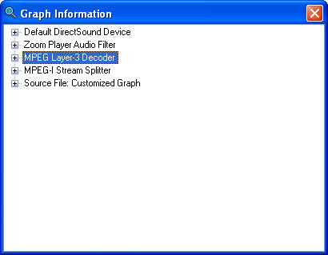
- Close the Graph Information window
and hit Ctrl-O, for Options / Setup
- Select Advanced Mode
- Select Filter Control
- Select the Customized Media Playback
tab and check Enable Customized Media Playback:
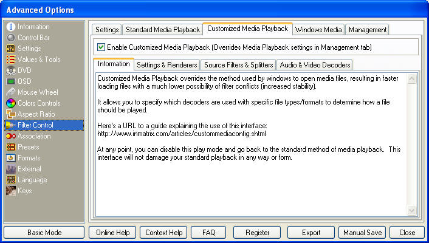
- On the Settings & Renderers tab,
make sure that the Use Indirect Connect and, optionally,
Show Customized Media Graph creation Errors checkboxes are
disabled. Select from the rendering filters and devices under the
checkboxes. (The defaults may be OK.). The selected renderers will
override any selection you made on the Standard Media Playback tab,
However, you should set the renders on both the Standard and
Customized media playback modes to the same values (in case
Customized Media Playback fails and drops to Standard mode)
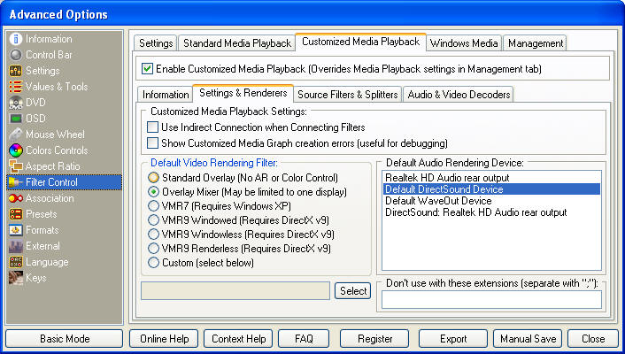
- Click on the Audio & Video Decoders
Sub-Tab. You will be presented with two lists. One for Audio
Decoders and one for Video Decoders. Double clicking on any item in
either list will open its configuration dialog.
- Configure the audio format which you want
to convolve (eg,the MPEG Layer 3 Decoder for MP3).
- Click Add Filter and select
Convolver Wrapper (and then OK):
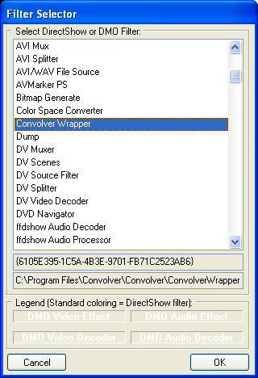
- Select the Convolver Wrapper:
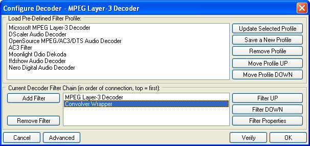
- ... and Filter Properties.
This will lead a pause of a minute or two while Convolver tunes
itself for your system. Your patience will be rewarded by a window
like the following:
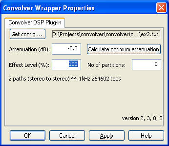
- Get the config (text file specifying a set
of filter paths) that you want to use. (See the
main page for more details.)
- Calculate the optimum attenuation for your
filter paths. This too will take a short while.
- Click OK. and Close the
Advanced Options.
- Close ZoomPlayer and restart it.
- Play the media that you originally
selected. You should be able to right click on ZoomPlayer and
select Filter Properties. Convolver Wrapper should
appear on the list. If you select Graph Information you
should see something like:
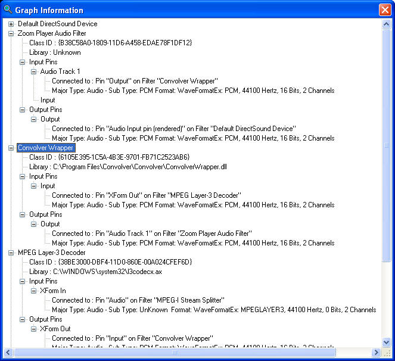
- You are done!
- The filter setup for this mode is
independent of the Music / Media mode setup.
- First create a text file called
ConvolverWrapper.filterdata in
C:\Program Files\Zoom Player\DVDAutoGraph with the
following 2-line contents:
DefineFilter(ConvolverWrapper.dll)
AudioFilter(Name=ConvolverWrapper,CLSID={6105E395-1C5A-4B3E-9701-FB71C2523AB6},InPin=Input,OutPin=Output)
You can also try
ConvolverFilter.filterdata:
DefineFilter(convolverFilter.ax)
AudioFilter(Name=ConvolverFilter,CLSID={2A0F29DC-2C05-4716-9522-3618687EAA5F},InPin=XForm
In,OutPin=XForm Out)
or ConvolverWrapperDMO.filterdata:
DefineFilter(ConvolverWrapper.dll)
AudioFilter(Name=ConvolverWrapper DMO,CLSID={6105E395-1C5A-4B3E-9701-FB71C2523AB6},DMOID={47427372-7AED-4E37-ABEB-7BD64C4184BF},InPin=Input,OutPin=Output)
Suitable files to be copied to
C:\Program Files\Zoom Player\DVDAutoGraph
can be found in C:\Program File\Convolver\Convolver
- Start ZoomPlayer Pro and switch to DVD mode
(F10)
- Right clock on ZoomPlayer and select
options/setup (Ctrl-O) and DVD and the DVD
Setup tab.
- Under Additional Filters select
Add to get:
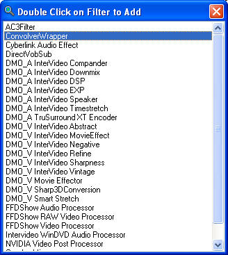
- Double click on ConvolverWrapper
to get the following, after ensuring that the Decoders and
Renderers that you want to use are selected:
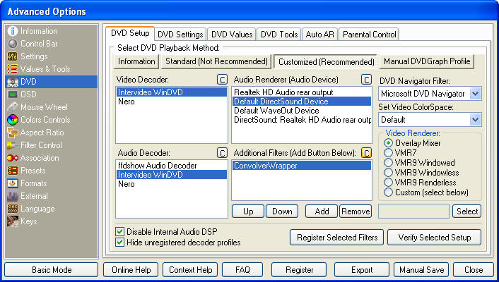
- Click on the C next to Audio
Decoder to set the number of channels to be produced:
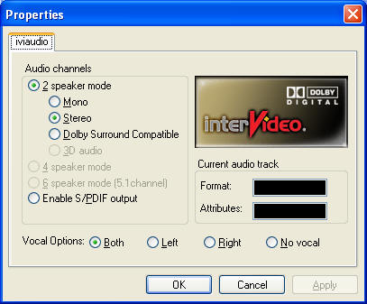
- Click on the highlighted C next
to Additional Filters (Add Button Below) to configure
Convolver Wrapper. It may take a minute or two for Convolver to
tune itself to your system. Your patience will be rewarded
with something like:
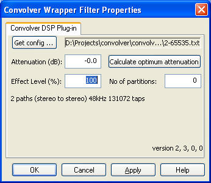
- Select a config file (see
main page) that
corresponds to the number of channels and sample rate that your
Audio Decoder generates.
- Calculate the optimum attenuation
(there will be a pause while this happens).
- Click OK and Close the
Advanced Options dialogue.
- Restart ZoomPlayer (seems to be
required sometimes).
- Play a DVD of your choice.
- Right click on Zoom Player and select
Filter Properties. Convolver Wrapper should appear on the
list. Select Graph Information and you should get
something like the following:
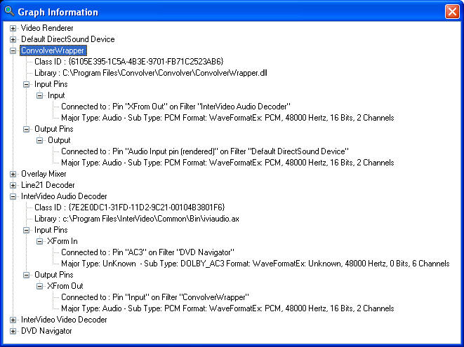
- You are done!
Troubleshooting
If you get something like
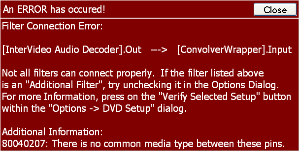
followed by
it is likely that you selected a Convolver filter configuration that does not
match the output of your Audio Decoder. Check the number of channels and
sample rate that Convolver is using by going into ZoomPlayer's Options | DVD
Setup | Additional Filters (C) dialogue (with ConvolverWrapper selected).
|